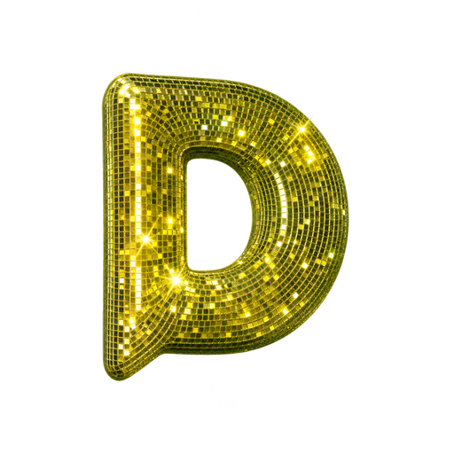

Yörünge haritası
çalışıyor
sıra sende
seni bekliyor
alt ajan
tıkla = aç · oturumu sürükle = taşı · boşluğu sürükle = döndür · sağ sürükle = kaydır · tekerlek = yakınlaştır · çift tık = sıfırla

DERIN TERMINALCANLIDERIN TERMINAL
dökümler dizinleniyor…